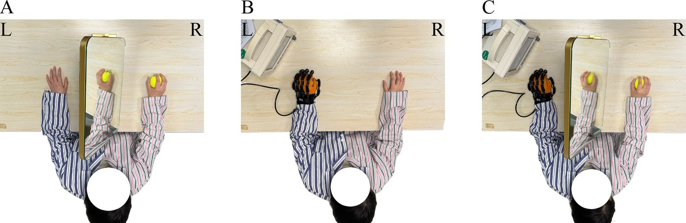

Chronique de recherche clinique Syrebo
Regards fondés sur les études consacrées aux gants robotisés de rééducation
D’après l’article
Combination of robot-assisted glove and mirror therapy improves upper limb motor function in subacute stroke patients: a randomized controlled pilot study
Qian J, Liang C, Liu R, Yu J, Yang T, Bai D
Frontiers in Neurology, 2025;16:1602896
DOI: 10.3389/fneur.2025.1602896 · ChiCTR2200057613


L’étude comparait trois groupes parallèles : thérapie miroir, entraînement avec un gant robotisé et association des deux. Elle utilisait le Syrebo SY-HR06. Parmi les personnes incluses dans l’analyse, le score moteur du membre supérieur après traitement était plus élevé dans le groupe combiné que dans le groupe thérapie miroir. Ce groupe recevait deux interventions à la fois : la différence ne peut donc pas être attribuée au seul gant. L’entraînement a duré quatre semaines, sans suivi ultérieur.
Note sur la marque : l’article nomme l’appareil Yisheng SY-HR06. Yisheng et Syrebo sont respectivement les marques chinoise et internationale de la même entreprise.
La pratique du membre supérieur alterne entre observer un mouvement et le réaliser. La thérapie miroir utilise le reflet du membre non atteint pour orienter l’attention. Un gant pneumatique répète l’ouverture et la fermeture de la main atteinte. Les deux approches peuvent être organisées séparément ou pendant la même séance : ce sont des parcours différents.
Une phrase indiquant seulement que le score a changé après l’ajout d’un appareil peut être interprétée comme un effet de l’appareil. La conception à trois groupes met côte à côte la thérapie miroir, le gant et leur association. Il s’agit toutefois d’une étude pilote : elle aide à déterminer si un essai plus vaste mérite d’être mené, mais ne montre pas que le résultat se maintient.
Tenir une tasse, fermer un bouton ou garder un stylo en main dépend de mouvements différenciés des doigts ; la marche revient souvent plus tôt. En phase subaiguë, le système nerveux évolue encore : un écart de score peut donc inclure une récupération spontanée. En lisant une étude pilote, un thérapeute vérifie les approches comparées, si l’évaluateur connaissait le groupe attribué et à quelle semaine l’observation s’est arrêtée. Cette étude réunit la thérapie miroir, le gant et leur association dans un même protocole pour éviter d’attribuer le score combiné à une seule de ces composantes.
L’étude utilisait un gant souple pneumatique Syrebo SY-HR06 sur la main atteinte pour des exercices de fermeture et de relâchement. Les trois groupes recevaient également la rééducation habituelle. Les critères comprenaient le FMA-UE, les stades de Brunnstrom du membre supérieur et de la main, le FTHUE-HK et la mesure de l’indépendance fonctionnelle. Un ergothérapeute certifié, qui ne connaissait pas l’attribution des groupes, réalisait les évaluations. La photographie de cette chronique est une scène de marque ; sa correspondance avec l’appareil de l’étude n’a pas encore été confirmée.
Les interventions se résument ainsi. Le groupe miroir effectuait des prises en regardant le reflet du membre supérieur non atteint dans le miroir. Le groupe gant portait le Syrebo SY-HR06 sur la main atteinte et pratiquait la fermeture puis le relâchement. Le groupe combiné associait le gant et la thérapie miroir dans une même séance. Les trois groupes poursuivaient la rééducation habituelle. L’article décrit 30 minutes de rééducation habituelle et 30 minutes supplémentaires pour l’intervention attribuée, chacune cinq fois par semaine pendant quatre semaines.
Les mesures utilisées en pratique étaient les suivantes : l’atteinte motrice avec l’évaluation de Fugl-Meyer du membre supérieur (FMA-UE) ; le stade de récupération avec les stades de Brunnstrom du membre supérieur et de la main ; les tâches fonctionnelles avec la version de Hong Kong du test fonctionnel du membre supérieur hémiplégique (FTHUE-HK) ; et l’autonomie dans les activités quotidiennes avec la mesure de l’indépendance fonctionnelle (FIM). Un ergothérapeute certifié, qui ne connaissait pas l’attribution des groupes, effectuait les cotations.
Protocole de l’étude
Étude pilote randomisée contrôlée en simple aveugle, avec trois groupes parallèles. Le groupe miroir pratiquait la préhension en regardant le reflet du membre supérieur non atteint dans le miroir. Le groupe gant utilisait le SY-HR06 pour des exercices d’ouverture et de fermeture. Le groupe combiné associait le gant et la thérapie miroir dans la même séance. Enregistrement : ChiCTR2200057613.
Participants et calendrier
La section des résultats indique que 100 personnes ont été examinées et 66 réparties aléatoirement. Quatorze ont quitté l’étude pendant l’intervention et ont été exclues de l’analyse. Celle-ci comprenait 16 personnes dans le groupe miroir, 18 dans le groupe gant et 18 dans le groupe combiné, soit 52 au total. Le résumé présente 52 comme le nombre de personnes randomisées : cette différence doit être clarifiée. L’article décrit 30 minutes de rééducation habituelle et 30 minutes supplémentaires pour l’intervention attribuée, chacune cinq fois par semaine pendant quatre semaines.
Principaux résultats
L’article rapporte que plusieurs scores ont évolué par rapport au niveau initial propre à chaque groupe. Pour la comparaison entre groupes, le FMA-UE après traitement était de 37.61±11.09 dans le groupe combiné et de 23.63±12.69 dans le groupe miroir ; l’article indique p=0.006 pour cette comparaison. Dans le groupe combiné, le stade de Brunnstrom après traitement était de 4.06±0.87 pour le membre supérieur et de 4.67±1.24 pour la main ; la mesure de l’indépendance fonctionnelle était de 94.17±9.49. Le résumé indique que ces scores étaient plus élevés que dans le groupe miroir. La comparaison la plus claire dans le résumé porte sur le groupe combiné et le groupe miroir : elle ne signifie pas que le groupe combiné a dépassé le groupe gant seul sur tous les critères.
L’étude réunissait le retour visuel et la répétition de mouvements de la main atteinte dans une même séance, tout en conservant les approches séparées dans son protocole. Elle permet de discuter de la manière dont un thérapeute organise la thérapie miroir, la pratique avec le gant ou les deux, en complément de la rééducation habituelle.
Le score du groupe combiné ne peut pas être présenté comme l’effet du seul gant, et quatre semaines d’observation ne démontrent pas un résultat durable. L’article discute de différences entre groupes dans la répartition selon le côté atteint ; la description précise du côté doit être clarifiée. Le nombre de prises n’a pas été comparé. Ces éléments doivent accompagner la valeur de p.
Pour organiser les séances, on peut se demander si la thérapie miroir et les ouvertures répétées de la main atteinte sont inscrites dans une seule séance ou dans deux : ce sont des plans différents à consigner. Le compte rendu précise l’approche, les semaines, les abandons et si l’évaluateur connaissait l’attribution. Le score combiné ne décrit pas l’effet du gant seul, et quatre semaines ne prouvent pas un résultat durable.
Limites Étude pilote, avec 16 à 18 personnes analysées par groupe. Quatre semaines, sans suivi. Quatorze abandons ont été exclus de l’analyse. L’article discute de différences de répartition selon le côté atteint et les différences du nombre de préhensions de la main n’étaient pas au centre de l’étude. La valeur de p est celle rapportée pour cette comparaison précise. Les effectifs, scores et valeur de p sont repris de l’article ; ils ne sont pas convertis en pourcentage de gain et ne constituent pas une promesse sur le produit.